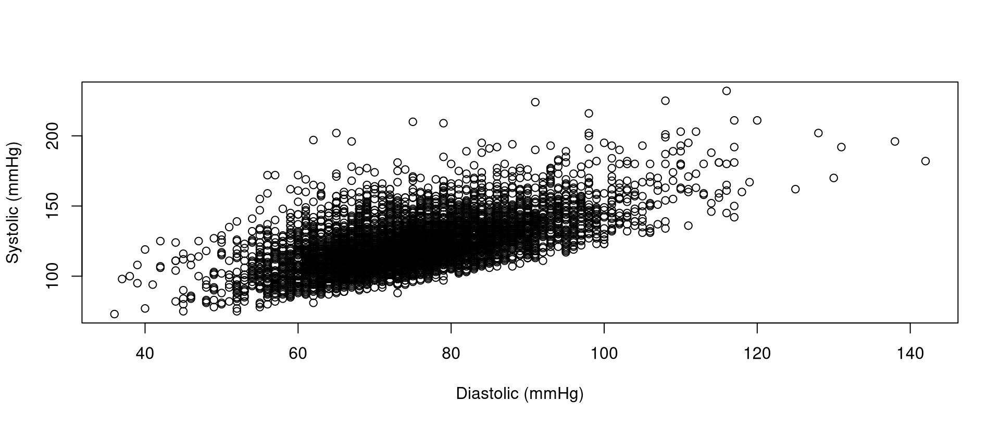
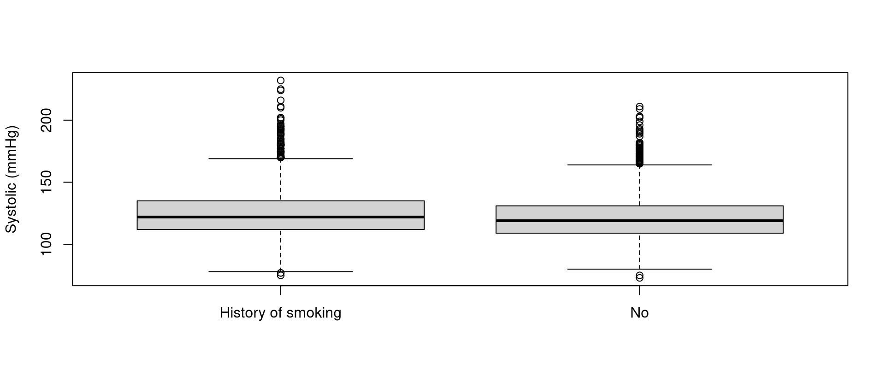

class(nhanes$bpxosy1)
#| [1] "integer"
head(nhanes$bpxosy1)
#| [1] 135 121 111 NA NA 110
class(nhanes$bpxodi1)
#| [1] "integer"
head(nhanes$bpxodi1)
#| [1] 98 84 79 NA NA 72Session 4: How can I perform bivariate analysis?
A Slower Introduction to R
Yea-Hung Chen, PhD, MS
UCSF Library
Thursday, October 30, 2025
Continuous-versus-continuous analysis
Systolic blood pressure versus diastolic blood pressure
- in this section, we’ll examine the association between systolic blood pressure and diastolic blood pressure
Scatter plots

Formula notation
- we can equivalently use a
y~xformula notation, like this:
- formula notation is used in several R functions, including:
lm()for linear regressiont.test()for t-tests
Formula notation

Pearson’s correlation coefficient
- the
use=complete.obsargument is similar tona.rm=TRUEinmean(),sd(), and other functions you saw last week- if either value in a pair is
NA, then the pair is not used
- if either value in a pair is
- the order of the variables does not matter
Other measures of correlation
Simple linear regression
Simple linear regression: confint()
Simple linear regression: summary()
summary(my_model)
#|
#| Call:
#| lm(formula = nhanes$bpxosy1 ~ nhanes$bpxodi1)
#|
#| Residuals:
#| Min 1Q Median 3Q Max
#| -32.629 -10.323 -2.271 7.361 89.203
#|
#| Coefficients:
#| Estimate Std. Error t value Pr(>|t|)
#| (Intercept) 49.16486 1.24660 39.44 <2e-16 ***
#| nhanes$bpxodi1 0.97895 0.01644 59.56 <2e-16 ***
#| ---
#| Signif. codes: 0 '***' 0.001 '**' 0.01 '*' 0.05 '.' 0.1 ' ' 1
#|
#| Residual standard error: 14.68 on 6121 degrees of freedom
#| (2030 observations deleted due to missingness)
#| Multiple R-squared: 0.3669, Adjusted R-squared: 0.3668
#| F-statistic: 3547 on 1 and 6121 DF, p-value: < 2.2e-16Simple linear regression: summary()
- as with the
t.test()function, it is possible to extract specific values, using dollar-sign notation
Simple linear regression: summary()
names(summary(my_model))
#| [1] "call" "terms" "residuals" "coefficients"
#| [5] "aliased" "sigma" "df" "r.squared"
#| [9] "adj.r.squared" "fstatistic" "cov.unscaled" "na.action"
summary(my_model)$coefficients
#| Estimate Std. Error t value Pr(>|t|)
#| (Intercept) 49.1648582 1.24659908 39.43919 2.462317e-303
#| nhanes$bpxodi1 0.9789544 0.01643749 59.55620 0.000000e+00
summary(my_model)$r.squared
#| [1] 0.3668766Simple linear regression: the data argument
- several R functions support the
dataargument - it is one way to omit dollar-sign notation
Exercise 1
Exercise 1
Create a script for today’s exercises. Save the script. Include code at the top for importing the NHANES data.
Create a scatter plot for the relationship between the first two measurements of pulse (
bpxopls1andbpxopls2), placing the second measurement on the y axis. Label both axes.
Exercise 1
Create a scatter plot for the relationship between diastolic blood pressure (
bpxodi1) and pulse (bpxopls1), placing diastolic blood pressure on the y axis. Label both axes.Fit a simple linear model for the relationship between diastolic blood pressure (
bpxodi1) and pulse (bpxopls1), with diastolic blood pressure as the y variable. Usesummary()to examine the model.
Continuous-versus-dichotomous analysis
Systolic blood pressure versus smoking
- in this section, we’ll examine the association between systolic blood pressure and smoking
Box plots

t-tests
t.test(nhanes$bpxosy1~nhanes$smoking)
#|
#| Welch Two Sample t-test
#|
#| data: nhanes$bpxosy1 by nhanes$smoking
#| t = 7.4317, df = 4887.9, p-value = 1.258e-13
#| alternative hypothesis: true difference in means between group History of smoking and group No is not equal to 0
#| 95 percent confidence interval:
#| 2.672803 4.588225
#| sample estimates:
#| mean in group History of smoking mean in group No
#| 124.7512 121.1207t-tests
my_test<-t.test(nhanes$bpxosy1~nhanes$smoking)
names(my_test)
#| [1] "statistic" "parameter" "p.value" "conf.int" "estimate"
#| [6] "null.value" "stderr" "alternative" "method" "data.name"
my_test$estimate
#| mean in group History of smoking mean in group No
#| 124.7512 121.1207
my_test$conf.int
#| [1] 2.672803 4.588225
#| attr(,"conf.level")
#| [1] 0.95Exercise 2
Exercise 2
Create a box plot for the relationship between pulse (
bpxopls1) and asthma (asthma), adding a label for the y axis, and removing the label for the x axis.Obtain a 95% confidence interval for the difference in mean pulse between the two asthma groups.
Exercise 2
Is the confidence interval for a yes-minus-no difference or for a no-minus-yes difference?
Obtain a 90% confidence interval for the difference in mean pulse between the two asthma groups, by adding the
conf.level=0.90argument tot.test().
Exercise 2
- The
wilcox.test()function implements the Wilcoxon rank-sum test (also known as the Mann-Whitney U test), which tests whether the “location” of a continuous variable’s distribution differs between two groups. Use the function, and formula notation, to compare the distribution of pulse between the two asthma groups.
Categorical-versus-categorical analysis
Smoking versus asthma
- in this section, we’ll examine the association between smoking and asthma
Contingency tables
- the first variable will be placed along the rows
Contingency tables
- we can add the
useNAargument to show missing values
Row-wise percents
- notice the two arguments inside
prop.table():- the
table() margin=1, which indicates we want row-wise percents
- the
Row-wise percents
- equivalently, written all in one line:
Column-wise percents
- the
margin=2argument indicates that we want column-wise percents
Fisher’s exact tests
fisher.test(table(nhanes$smoking,nhanes$asthma))
#|
#| Fisher's Exact Test for Count Data
#|
#| data: table(nhanes$smoking, nhanes$asthma)
#| p-value = 0.008981
#| alternative hypothesis: true odds ratio is not equal to 1
#| 95 percent confidence interval:
#| 1.038673 1.309340
#| sample estimates:
#| odds ratio
#| 1.166346- notice that this also returns the odds ratio
Chi-squared tests
X-squaredis the \(\chi^2\) statisticdfis the degrees of freedom
Exercise 3
Exercise 3
Produce a contingency table of asthma (
asthma) and gender (gender), with gender along the rows.Find the row-wise percents.
Conduct a Fisher’s exact test for the association between asthma and gender.
Exercise 3
Store the test, using object assignment. Use
names()to examine the values that can be extracted. Extract the odds ratio (estimate).Extract the 95% confidence interval for the odds ratio (
conf.int).
Exercise 3
Next week, we’ll discuss the ggplot2 package, which is a powerful and popular data-visualization package. Install the package, as follows:
- Select Install in the Packages tab.
- Type
ggplot2. - Select the Install button at the bottom.
Equivalently, type the following in the console and press the enter or return key on your keyboard:
Exercise 3
- Verify that the package was successfully installed by checking the Packages tab.
- In the search field at the top right, begin typing
ggplot2. - Verify that the package shows up.
- In the search field at the top right, begin typing